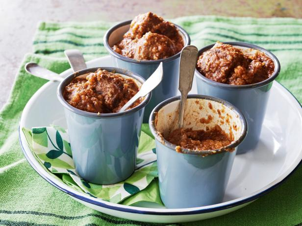

Pressure Cooker Chili
Recipe Title

Pressure Cooker Chili
This hearty pressure cooker chili is delicious, so good on a cold snowy day.
What's even better is having it ready within 35 minutes from start to finish!
Ingredients
- 3lbs of your choice of stew meat (beef, pork, lambs)
- 2 teaspoon of oil
- 1.5 teaspoon of salt
- 1 (12 ounce) bottle of beer, preferably a ale
- 1 (16 ounce) container of salsa
- Approximately 30 tortilla chips
- 2 chipotle peppers in adobo sauce
- 1 tablespoon of adobo sauce
- 1 tablespoon tomatoe paste
- 1 tablespoon chili powder
- 1 teaspoon ground cumin
Directions
- Place the meat in a large mixing bowl and toss with the oil and salt. Set aside
- Heat a 6-quart heavy-bottomed pressure cooker over high heat until hot. Add the meat in 3 or 4 batches and brown on all sides, approximately 2 minutes per batch.
Once each batch is browned, place the meat in a clean large bowl.
- Once all of the meat is browned, add the beer to the cooker to deglaze the pot.
- Scrape the browned bits from the bottom of the pot. Add the meat back to the pressure cooker along with the salsa, tortilla chips, chipotle peppers, adobo sauce, tomato paste, chili powder, and ground cumin and stir to combine.
- Lock the lid in place according to the manufacturer's instructions. When the steam begins to hiss out of the cooker, reduce the heat to low, just enough to maintain a very weak whistle. Cook for 25 minutes. Remove from the heat and carefully release the steam. Serve immediately.